Leerders het in Graad 8 reeds kennis gemaak met serie en parallelle stroombane. In hierdie hoofstuk gaan hulle meer leer oor hoe die stroombane werk. Hulle word ook bekendgestel aan die konsep van potensiaalverskil. Dit sal goed wees om van die aktiwiteite wat in Graad 8 gedoen is, hierdie jaar te herhaal. Die Graad 8 inhoud is aanlyn verkrygbaar by www.curious.org.za. Dit sal leerders help om konsepte wat hulle 'n jaar gelede geleer het, te hersien. Indien die leerders die konsepte reeds bemeester het, kan meer tyd aan die ondersoeke spandeer word. As uitbreiding, kan ekstra berekenings ook gedoen word. Sommige berekenings word hier ingesluit, soos om byvoorbeeld die weerstand te bereken wanneer die potensiaalverskil en elektriese stroom gegee word.
Nota: In KABV word die term 'spanning' hoofsaaklik gebruik, maar in hierdie werkboeke word 'potensiaalverskil' verkies, aangesien dit wetenskaplik meer korrek is. Potensiaalverskil is ook die term wat in die VOO vlak gebruik word.
Indien jy slegs Natuurwetenskappe onderrig, is dit 'n goeie idee om met die Tegnologie-onderwyser te praat oor hoe die twee kurrikula oorvleuel, en mekaar aanvul, veral met betrekking tot elektrisiteit. Sommige van die konsepte wat vir die eerste keer in die Natuurwetenskappe bekendgestel word, is alreeds in die Tegnologie-kurrikulum behandel. Om bewus te wees van wat die leerders alreeds ken, sal help om die klasse meer effektief en stimulerend vir leerders te maak.
'n Multimeter is 'n nuttige apparaat vir die ondersoeke en aktiwiteite in hierdie hoofstuk. Om meer oor multimeters, en hoe hulle werk, uit te vind, kan daar na die volgende video gekyk word: bit.ly/16qtjg6 Onthou dat die skakel slegs in die adresbalkie van jou internetsoekblad ingetik hoef te word, om toegang tot die video te verkry.
4.1 Seriestroombane (3 ure)
Take
Vaardighede
Aanbevelings
Ondersoek: Wat is die effek op die elektriese stroom en die potensiaalverskil wanneer meer selle in serie gekoppel word?
Ondersoek, voorspelling, hipoteseformulering, die neem van lesings, waarneming, analisering en voorstelling van data
KABV voorgestel
Ondersoek: Die effek van die hoeveelheid selle in serie op die stroomsterkte en die potensiaalverskil
Ondersoek, voorspelling, hipoteseformulering, analisering, die maak van gevolgtrekkings
Opsionele PhET simulasie ondersoek
Aktiwiteit: Die verhoging van die weerstand in 'n seriestroombaan
Die volg van instruksies, waarneming, beskrywing, verduideliking
KABV voorgestel
Ondersoek: Meting van die potensiaalverskil oor komponente in 'n seriestroombaan
Ondersoek, voorspelling, hipoteseformulering, die neem van lesings, waarneming, die maak van berekeninge, analisering
Aktiwiteit: Elektriese stroomsterkte in 'n seriestroombaan
Herroeping van inligting, die volg van instruksies, teken, die neem van lesings, analisering, die maak van gevolgtrekkings
KABV voorgestel
4.2 Parallelle stroombane (3 ure)
Take
Vaardighede
Aanbevelings
Ondersoek: Wat gebeur met die elektriese stroom en potensiaalverskil wanneer selle in parallel in die stroombaan gevoeg word?
Ondersoek, die maak van voorspellings, hipoteseformulering, die neem van lesings, teken, waarneming, analisering
KABV voorgestel
Aktiwiteit: Die byvoeging van resistors in parallel
Die volg van instruksies, waarneming, beskrywing, verduideliking
KABV voorgestel
Aktiwiteit: Elektriese stroom in 'n parallelle stroombaan
Herroeping van inligting, die volg van instruksies, teken, die neem van lesings, analisering, die maak van berekeninge
KABV voorgestel
Ondersoek: Meet die potensiaalverskil oor komponente in 'n parallelle stroombaan
Ondersoek, die maak van voorspellings, hipoteseformulering, die neem van lesings, teken, waarneming, analisering
KABV voorgestel
Aktiwiteit: Serie en parallelle stroombane
Die volg van instruksies, waarneming, beskrywing, verduideliking
KABV voorgestel
Wat gebeur wanneer ons selle in serie of parallel byvoeg?
Wat gebeur wanneer ons resistors in serie en parallel byvoeg?
Wat is potensiaalverskil?
Hoe word ammeters en voltmeters in 'n stroombaan gekoppel?
Seriestroombane
seriestroombaan
potensiaalverskil
spanning
'n Seriestroombaan verskaf slegs een roete vir die elektriese stroom om deur die stroombaan te beweeg.
'n Nuttige video vir die hersiening van elektrisiteit en stroombane: bit.ly/15XAKOK
Seriestroombaan
Teken 'n stroombaandiagram vir hierdie stroombaan
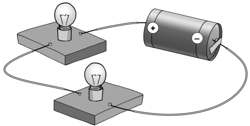
Die stroombaandiagram vir die bostaande stroombaan is as volg:
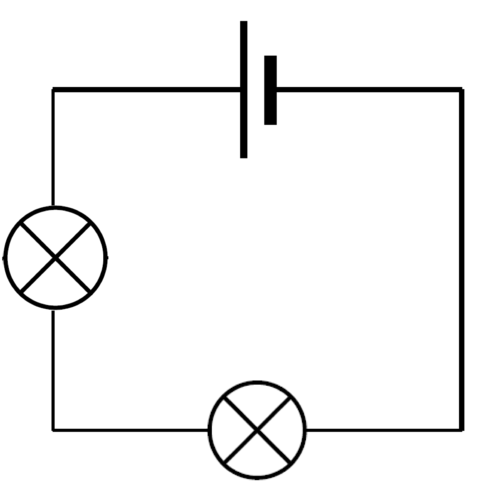
Onthou dat 'n battery 'n groep selle is wat verbind is.
Hoeveel selle en hoeveel resistors is in die bostaande stroombaan?
Daar is een sel en twee resistors (gloeilampies) in die stroombaan.
Wat gebeur wanneer meer selle of resistors in serie in 'n stroombaan gekoppel word? Ons gaan die effek op die elektriese stroom en potensiaalverskil in die seriestroombaan ondersoek.
Jy mag dalk al van potensiaalverskil in Tegnologie geleer het, maar hier is die eerste keer dat ons dit in Natuurwetenskappe ondersoek.
Wat is potensiaalverskil?
'n Nuttige video wat potensiaalverskil en elektriese stroom verduidelik, deur 'n rivier as analogie te gebruik. Die video is nie in die leerders se boeke ingesluit nie, omdat van die konsepte, soos 'n coulomb lading, buite die kurrikulum val. bit.ly/Havmzk
Soms word die term spanning gebruik om potensiaalverskil te beskryf. Dit is omdat ons potensiaalverskil in volt meet. Spanning is nie die regte wetenskaplike term nie. Potensiaalverskil is die meer korrekte term om te gebruik.
Potensiaalverskil is die verskil in potensiële energie per lading tussen twee verskillende punte in 'n elektriese stroombaan. 'n Eenvoudiger verduideliking is as volg: potensiaalverskil sê vir ons hoeveel energie die elektrone verloor wanneer hulle deur 'n resistor vloei, of hoeveel hulle bykry wanneer hulle deur 'n sel of battery vloei. Die elektrone verloor energie omdat hulle dit aan die resistor oordra in die vorm van warmte, lig of klank. Die elektrone verkry energie wanneer hulle deur die sel of battery beweeg omdat chemiese energie van die battery na die elektrone oorgedra word.
Die potensiaalverskil word met 'n voltmeter gemeet. Die eenheid van potensiaalverskil is die volt.
Die volt is na die Italiaanse fisikus Alessandro Volta (1745-1827) vernoem. Hy het die eerste elektriese battery, wat 'n ononderbroke elektriese stroom kon lewer, die voltaïese stapel, ontdek.
'n Voltmeter.
Die voltmeter het 'n baie hoë interne weerstand, en moet in parallel met die komponent, waarvan die potensiaalverskil gemeet moet word, gekoppel word. Dit moet dus op twee verskillende punte (gewoonlik voor en na 'n komponent) gekoppel word. Die voltmeter bepaal die potensiaalverskil tussen hierdie twee punte. In die diagram hieronder, word die voltmeter tussen twee punte (A en B) gekoppel.
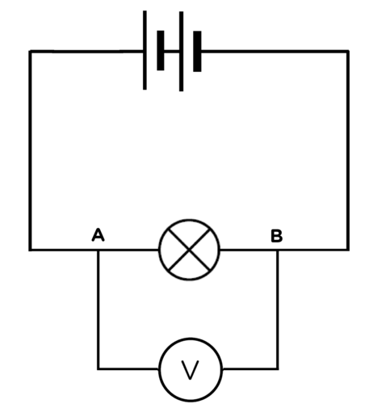Die voltmeter word in parallel met die gloeilampie gekoppel en meet die potensiaalverskil tussen twee punte, A en B.
Indien 'n voltmeter in serie gekoppel word, sal daar nie twee verskillende punte wees nie, aangesien die voltmeter op twee punte met die dieselfde potensiaalverskil gekoppel is. Wat dink jy gaan gebeur indien 'n voltmeter in serie gekoppel word? Verduidelik jou antwoord.
Dit sal die elektriese stroom beïnvloed, aangesien 'n voltmeter 'n baie hoë weerstand het. Die elektriese stroom sal nie vloei nie, of slegs 'n baie klein elektriese stroom sal vloei.
Watter instrument gebruik ons om die elekriese stroom in 'n stroombaan te meet?
'n Ammeter.
Hoe word hierdie instrument in 'n stroombaan gekoppel? Verduidelik waarom dit so gekoppel word.
Die ammeter word in serie gekoppel, omdat ons die elektriese stroom wil meet, en al die elektriese stroom moet dus daardeur vloei.
Dink jy 'n ammeter het 'n groot of klein weerstand? Verduidelik jou antwoord.
'n Ammeter het 'n baie klein weerstand sodat dit nie die stroom sal teenstaan, en dus nie die lesing sal beïnvloed nie.
Teken 'n stroombaandiagram van 'n stroombaan, met 'n ammeter, 'n gloeilampie en sel, in die spasie hieronder.
Die stroombaan behoort as volg te lyk, met die ammeter in serie:
Die volgende foto wys 'n voltmeter wat in parallel, en 'n ammeter wat in serie, gekoppel is.
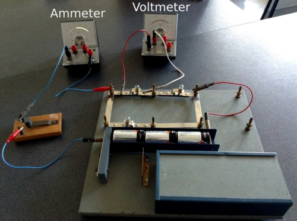
Selle in serie
Wanneer selle aan mekaar gekoppel is, word dit 'n battery genoem. Kom ons ondersoek wat gebeur wanneer daar meer selle in serie in 'n stroombaan gekoppel word.
Indien daar nie genoeg apparaat beskikbaar is vir hierdie aktiwiteit nie, laat die leerders toe om beurte te maak. Die PhET simulasie kan vanaf die volgende skakel verkry word: bit.ly/17vBMBX
Voordat die leerders die PhET simulasie gebruik, is daar verskeie aksies waarmee jy bekend moet wees. Maak seker jy weet hoe om:
komponente in 'n stroombaan te koppel. Jy moet op die komponent klik en dit dan, vanaf die skerm aan die kant, trek tot in die posisie waar jy dit wil hê.
komponente met verbindingsdrade te verbind. Jy kan 'n verbindingsdraad op die skerm plaas en dan die kante verleng, totdat dit met die komponent verbind word. Wees versigtig wanneer jy gloeilampies koppel. 'n Kortsluiting kan veroorsaak word, indien hulle verkeerd gekoppel is. Dit sal 'n bietjie oefening verg.
verlengingsdrade of komponente te verwyder of by te voeg. Soos in 'n regte stroombaan kan komponente nie sommer net bygevoeg word nie, maar moet ander komponente eers verwyder word, om plek te maak vir nuwes. Regs-klik met jou rekenaarmuis op die verlengingsdraad tussen die komponente. Jy sal dan die opsie hê om dit te verwyder. Indien jy op die komponent self regs-klik, het jy die opsie om die hele komponent te verwyder.
die voltmeter en ammeter te gebruik. Die nie-kontak-ammeter is baie nuttig, maar die ander een is meer realisties.
die opstelling te verwyder om 'n nuwe een te bou. Leerders kan stroombane vir die toekoms stoor, sodat hulle later daarheen kan terugkeer. Indien hulle 'n skoon bladsy nodig het om weer te begin, kan hulle op die 'reset all' knoppie klik.
die weerstand van die resistor of gloeilampie te herstel, of die potensiaalverskil van die battery te verander. Regs-klik op die komponent en jy sal die opsie hê om die stellings te verander.
Wat is die effek van meer selle in serie op die elektriese stroom en potensiaalverskil?
HIPOTESE:
Skryf 'n hipotese vir die ondersoek.
Moontlike hipotese:
Hoe meer selle in serie gekoppel word, hoe hoër sal die elektriese stroom en die potensiaalverskil, in die stroombaan wees.
Onthou dat 'n hipotese nie 'korrek' hoef te wees nie, dit moet slegs aandui watter veranderlikes betrokke is, en die verband wat tussen hulle verwag word.
MATERIALE EN APPARAAT:
drie 1,5 V selle
geïsoleerde kopergeleidingsdrade met krokodilklampe
ammeter
voltmeter
resistor of gloeilampie
Indien jy 'n gloeilampie, en nie 'n ammeter nie, gebruik om die effek te sien, let dan op na die helderheid van die gloeilampie soos jy meer selle in serie byvoeg.
METODE:
Bou 'n stroombaan met een sel, 'n resistor en 'n ammeter in serie.
Koppel die voltmeter in parallel met die sel, soos in die onderstaande diagram aangedui word.
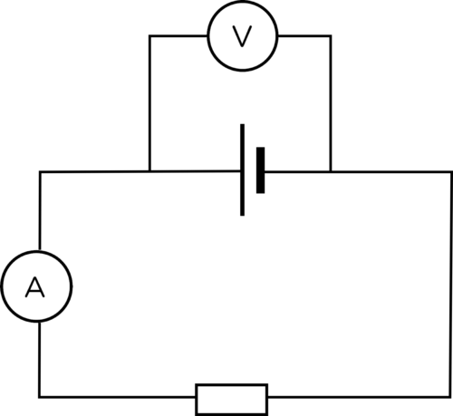
Teken die ammeter- en voltmeterlesings in die onderstaande tabel aan.
Koppel 'n tweede sel in serie met die eerste een.
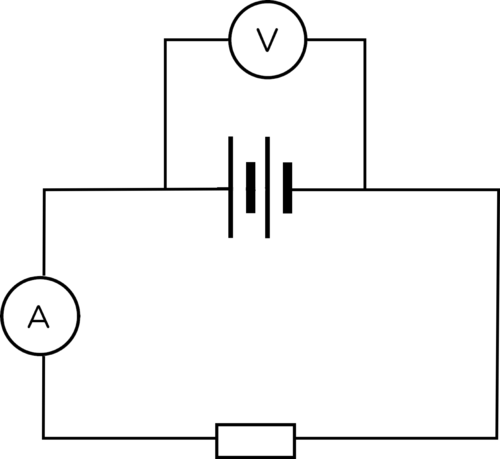
Teken die nuwe ammeter- en voltmeterlesings in die tabel aan.
Koppel 'n derde sel in serie met die ander twee selle.
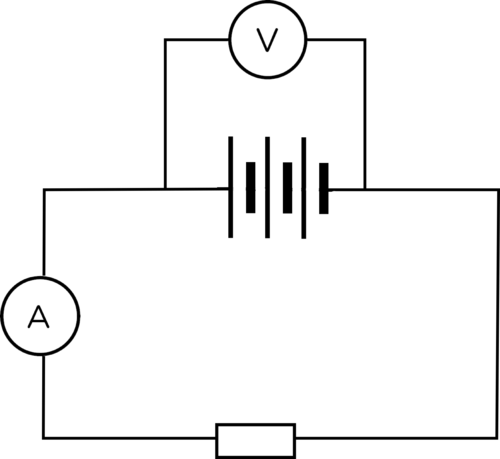
Teken die nuwe ammeter- en voltmeterlesings in die tabel aan.
Teken 'n grafiek van jou resultate.
RESULTATE:
Onthou dat die eenheid waarin daar gemeet word in die kolomopskrif aangeteken moet word, en nie in elke sel in die tabel nie.
Voltooi die volgende tabel:
Getal selle
Ammeterlesing (A)
Voltmeterlesing (V)
1
2
3
Gebruik jou tabel om twee lyngrafieke op dieselfde assestelsel te teken. Een grafiek moet die getal selle teenoor die elektriese stroom (ammeterlesing) aandui, en die ander grafiek moet die getal selle teenoor die potensiaalverskil (voltmeterlesing) aandui. Besluit watter veranderlikes die onafhanklike en afhanklike veranderlikes in die ondersoek is. Trek 'n bespassende lyn deur die datapunte.
Leerder behoort die getal selle, die onafhanklike veranderlike, op die x-as te teken. Leerders kan ook twee aparte grafieke teken. Grafieke moet ook van 'n opskrif voorsien word.
'n Bespassende lyn (of tendenslyn) is 'n reguitlyn wat die data die beste voorstel. Trek 'n reguitlyn tussen die punte deur, sodat die punte aan die bokant van die lyn met die punte aan die onderkant van die lyn balanseer. Die lyn kan deur sommige van die punte, geeneen van die punte, of deur al die punte gaan.
Indien jy 'n gloeilampie in plaas van 'n resistor gebruik, wat let jy op gebeur met die helderheid van die gloeilampie wanneer meer selle in serie gekoppel word? Indien jy dit nie gedoen het nie, wat dink jy sal gebeur?
Die gloeilampie skyn helderder wanneer meer selle in serie gekoppel word.
GEVOLGTREKKING:
Wat is ons gevolgtrekking ten opsigte van die stroomsterkte en potensiaalverskil wanneer meer selle in serie gekoppel word?
Die stroomsterkte en die potensiaalverskil word verhoog wanneer meer selle in serie in 'n stroombaan gekoppel word.
Wat het ons geleer? Wanneer meer selle in serie in 'n stroombaan gekoppel word, word die stroomsterkte in die stroombaan en die potensiaalverskil oor die selle verhoog.
Gebruik hierdie simulasie om meer van elektriese stroombane te leer. bit.ly/1gqqTIa
Die effek van die getal selle wat in serie gekoppel is, op stroomsterkte en potensiaalverskil in 'n stroombaan.
Hierdie is 'n opsionele ondersoek wat PhET ('Physics Education Technology') se aanlyn simulasies gebruik. Jy mag dit gedurende klastyd doen, of andersins kan jy op jou eie die webblad besoek en met die simulasie speel.
Hierdie is 'n opsionele aktiwiteit. Dit is basies dieselfde as die vorige ondersoek, maar gebruik die PhET simulasiesagteware. Die PhET simulasies verskaf akkurate resultate, het nie 'n laboratorium nodig nie, en grafieke kan maklik met behulp van die data geteken word.
HIPOTESE:
Skryf 'n hipotese vir die ondersoek.
Moontlike antwoord: Wanneer die getal selle in serie vermeerder word, sal die stroomsterkte en die potensiaalverskil in die stroombaan verhoog.
Bou 'n seriestroombaan met een sel, 'n resistor en 'n ammeter in serie deur die PhET simulasie te gebruik. Trek en los elke komponent om die stroombaan te bou.
Koppel die voltmeter in parallel met die sel.
Teken die lesings in die onderstaande tabel aan.
Koppel 'n tweede sel in serie met die eerste een.
Teken die nuwe lesings in die onderstaande tabel aan.
Koppel 'n derde sel in serie met die ander twee selle.
Teken die nuwe lesings in die onderstaande tabel aan.
Teken 'n grafiek van jou resultate.
RESULTATE:
Voltooi die volgende tabel:
Getal selle
Ammeterlesing (A)
Voltmeterlesing (V)
1
2
3
Gebruik die tabel om twee nuwe lyngrafieke te teken. Een grafiek moet die getal selle teenoor die elektriese stroom (ammeterlesing) aandui, en die ander grafiek moet die getal selle teenoor die potensiaalverskil (voltmeterlesing) aandui. Besluit watter veranderlike die onafhanklike veranderlike, en watter een die afhanklike veranderlike vir die ondersoek is.
GEVOLGTREKKING:
Wat kan ons vanuit hierdie ondersoek aflei, oor die elektriese stroomsterkte en die potensiaalverskil, wanneer meer selle in serie gekoppel word?
Die stroomsterkte en die potensiaalverskil word verhoog wanneer meer selle in serie in 'n stroombaan gekoppel word.
Resistors in serie
Kom ons hersien van die werk wat ons in Gr. 8 oor seriestroombane gedoen het.
Verhoging van die weerstand in 'n seriestroombaan
Hierdie is 'n hersieningsaktiwiteit oor werk wat leerders in Gr. 8 gedoen het. Dit kan saam met die volgende ondersoek oor die effek van potensiaalverskil, gedoen word.
Kyk hoe die helderheid van die gloeilampies verander, soos meer gloeilampies in serie gekoppel word. bit.ly/H6suDb
drie 1,5 V selle
1,5 V sel
3 flitsgloeilampies
geïsoleerde kopergeleidingsdrade
skakelaar
ammeter
Die skakelaar is nie 'n noodsaaklike deel van die ondersoek nie, en kan uit die stroombaan gelaat word. Indien 'n ammeter nie beskikbaar is nie, kan die helderheid van die gloeilampies as aanduiding van die stroomsterkte gebruik word.
INSTRUKSIES:
Bou 'n stroombaan met 'n sel, ammeter, een gloeilampie en die skakelaar in serie.
Sluit die skakelaar.
Let op hoe helder die gloeilampie skyn, en skryf die ammeterlesing neer. Teken 'n stroombaandiagram.
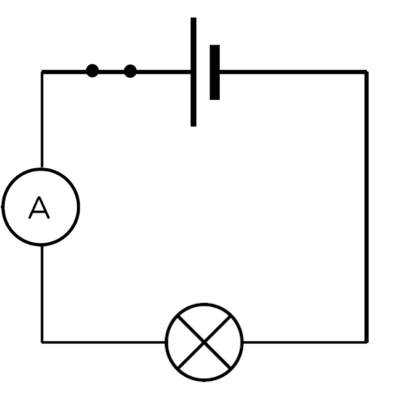Stroombaan 1
Maak die skakelaar oop.
Koppel nog 'n gloeilampie in die stroombaan.
Sluit die skakelaar.
Let op hoe helder die gloeilampie skyn, en skryf die ammeterlesing neer. Teken 'n stroombaandiagram.
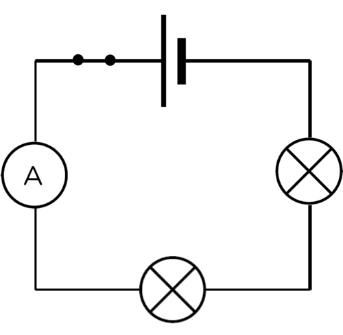Stroombaan 2
Maak die skakelaar oop.
Koppel 'n derde gloeilampie in die stroombaan.
Sluit die skakelaar.
Let op hoe helder die gloeilampie skyn, en skryf die ammeterlesing neer. Teken 'n stroombaandiagram.
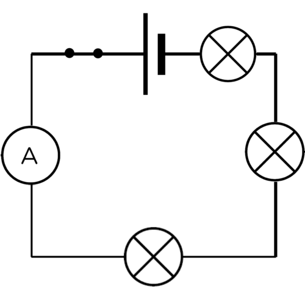Stroombaan 3
Teken die ammeterlesings in die volgende tabel aan:
Getal gloeilampies (resistors)
Ammeterlesing (A)
1
2
3
VRAE:
Wat gebeur met die helderheid van die gloeilampies en die ammeterlesing wanneer meer gloeilampies in die stroombaan gevoeg word?
Die helderheid van die gloeilampies en die ammeterlesing neem af.
Verduidelik die waarnemings wat jy in vraag 1 gemaak het.
Soos die getal gloeilampies vermeerder, het die weerstand van die stroombaan ook vermeerder. Die verhoogde weerstand het die elektriese stroom verlaag.
Indien ons die weerstand in 'n seriestroombaan verhoog, deur meer resistors by te voeg, word die elektriese stroom verlaag. Ons sê die elektriese stroom is omgekeerd eweredig aan die weerstand. Ons gaan nou na die potensiaalverskil van elke weerstand kyk.
Meet die potensiaalverskil oor komponente in 'n seriestroombaan.
Indien daar nie genoeg apparaat beskikbaar is sodat leerders dit in groepe kan doen nie, moet die aktiwiteit as 'n demonstrasie uitgevoer word. Indien internettoegang moontlik is, laat die leerders toe om PhET simulasies te gebruik. Die simulasieresultate behoort meer akkuraat te wees, aangesien laboratorium voltmeters nie noodwendig korrek gekalibreer is nie.
ONDERSOEKENDE VRAAG:
Wat is die verband tussen die potensiaalverskil oor die battery, en die potensiaalverskil oor die resistors in die seriestroombaan.
MATERIALE EN APPARAAT:
drie 1,5 V selle
geïsoleerde kopergeleidingsdrade met krokodilklampe
twee resistors met verskillende weerstande
drie voltmeters
'n skakelaar
Indien daar nie twee verskillende resistors beskikbaar is nie, kan twee gloeilampies gebruik word, maar dan sal daar nie 'n direkte vergelyking tussen die potensiaalverskil en weerstand gemaak kan word nie, omdat die presiese weerstande nie beskikbaar is nie.
METODE:
Bou 'n stroombaan met drie 1,5 V selle, twee weerstande, en 'n skakelaar, alles in serie.
Koppel 'n voltmeter, in parallel tot die drie selle. Dit is voltmeter V1.
Koppel 'n tweede voltmeter, in parallel met een van die resistors. Dit is voltmeter V2. Let op of hierdie resistor 'n hoër of laer weerstand as die selle het.
Koppel 'n derde voltmeter, in parallel met die ander resistor. Dit is voltmeter V3. Let op of hierdie resistor 'n hoër of laer weerstand het.
Teken die lesings van die drie voltmeters aan.
Indien die leerders hierdie ondersoek in groepe doen, maak seker dat hul stroombane korrek gebou is, en dat die voltmeters in parallel gekoppel is.
RESULTATE EN WAARNEMINGS:
Teken 'n stroombaandiagram van jou stroombaan in die spasie hieronder. Let op watter resistor die grootste weerstand het.
Die posisie van die komponente in die stroombaandiagram is nie belangrik nie. Die selle kan byvoorbeeld aan die bokant, onderkant, linkerkant of regterkant geteken word. Dit is egter belangrik dat die korrekte simbole gebruik word, die resistors en selle in serie, en die voltmeters in parallel met die komponente wat hulle meet, geteken word.
Lesing op V1:
Lesing op V2:
Lesing op V3:
Vul die lesings op jou stroombaandiagram hierbo in.
Hierdie lesing sal afhang van die eksperimentele opstelling wat beskikbaar is, of van die PhET simulasie se waardes. Die som van die lesings op V2 en V3 is gelyk aan V1.
Wat let jy op van die lesings op voltmeters V2 en V3 in vergelyking met V1?
Leerders se antwoorde mag verskil, maar hulle behoort op te let dat die lesings op V2 en V3 kleiner is as op V1.
Tel die lesings op V2 en V3 bymekaar. Wat let jy op?
Die antwoord sal afhang van die akkuraatheid van die voltmeterlesings. Die leerders behoort te sien dat die som van V2 en V3 gelyk is aan die lesing op V1 (m.a.w. V2 + V3 = V1).
Watter resistor het die grootste potensiaalverskil, die een met hoër of laer weerstand?
Die resistor met die hoogste weerstand het die hoogste potensiaalverskil.
GEVOLGTREKKINGS:
Formuleer 'n gevolgtrekking vir hierdie ondersoek.
Die totale potensiaalverskil oor die battery is gelyk aan die som van die potensiaalverskil oor elk van die resistors. 'n Resistor met 'n hoër weerstand sal 'n groter potensiaalverskil hê.
Wat het ons geleer? Die som van die potensiaalverskil oor die resistors in 'n seriestroombaan is gelyk aan die potensiaalverskil oor die battery.
Indien 'n resistor 'n hoë weerstand het, sal dit ook 'n hoë potensiaalverskil hê. Indien 'n resistor 'n lae weerstand het, sal dit ook 'n lae potensiaalverskil hê. Ons kan dit verduidelik deur te verwys na die battery wat elektrone met 'n hoë potensiële energie lewer. Wanneer die elektrone deur die resistor beweeg, skakel hulle van die potensiële energie om na warmte, lig en klank. In 'n seriestroombaan is daar slegs een roete wat die elektrone kan neem, en hulle dra die energie oor aan die resistors waardeur hulle beweeg. Hoe hoër die weerstand van die resistor, hoe meer energie word oorgedra. Daar sal dus 'n groter verskil in potensiële energie per lading wees, voor en na die resistor, in 'n seriestroombaan.
Kom ons kyk na die volgende voorbeeld:
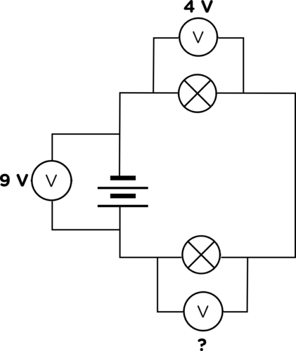
Indien die potensiaalverskil oor die selle, of battery 9 V is, en die potensiaalverskil oor die een gloeilamp 4 V is, wat sal die lesing op die derde voltmeter wees?
Die potensiaalverskil oor die twee resistors saam, moet gelyk wees aan die potensiaalverskil oor die battery. Dit beteken dat die lesing op die derde voltmeter 9 V – 4 V = 5 V moet wees.
Ons sê resistors is potensiaalverskilverdelers.
Toets jou kennis van seriestroombane
Die aktiwiteit sal aan leerders die geleentheid bied om hulle begrip van die konsepte wat tot dusver geleer is, te toets. Laat die leerders hulle eie voorspellings maak. Indien die PhET simulasies gebruik word, laat elke leerder toe om sy eie stroombaan met PhET te bou om sy voorspellings te toets. Indien daar nie genoeg apparaat beskikbaar is, sodat elke leerder sy eie stroombaan kan bou nie, laat die leerders in groepe werk, of bou 'n paar opstellings as demonstrasies aan die klas. Indien die leerders in groepe werk, maak seker dat elke leerder 'n geleentheid kry om die stroombaan te bou, sodat almal die vaardighede kan aanleer.
Leerders moet, sonder hulp, hulle eie voorspellings maak. Dit sal aan hulle die geleentheid gee om te oefen om voorspellings te maak (hipoteses te formuleer) en dit dan te toets. Dit is die kern van wetenskaplike ondersoeke. Die gevolg is dat die voorspellings leerder-afhanklik sal wees.
drie 1,5 V selle
selle
flitsgloeilampies
geïsoleerde kopergeleidingsdrade
ammeters
INSTRUKSIES:
Kyk na die stroombane in die onderstaande tabel. Jy kan aanneem dat al die gloeilampies identies is.
I. 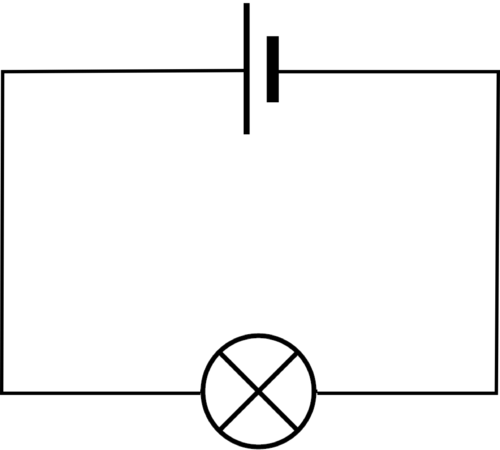
II. 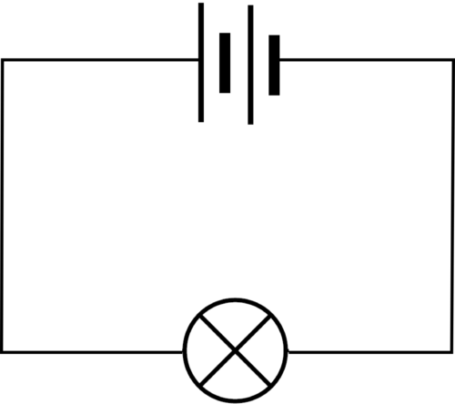
III.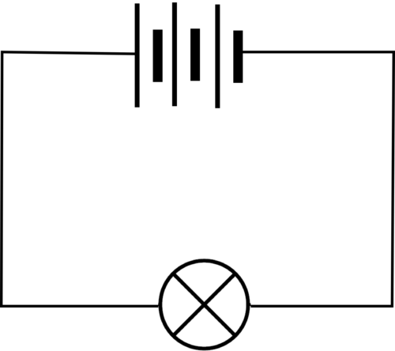
IV. 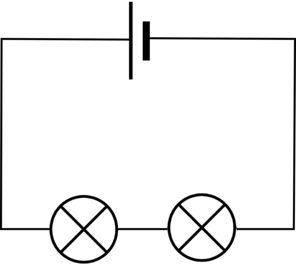
V. 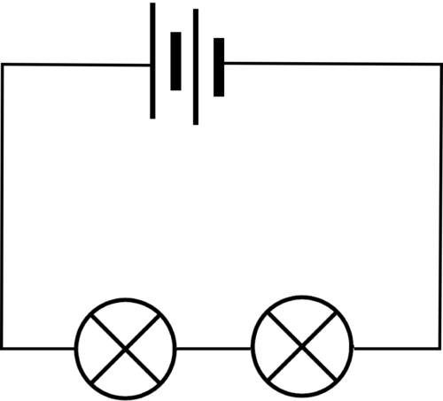
VI. 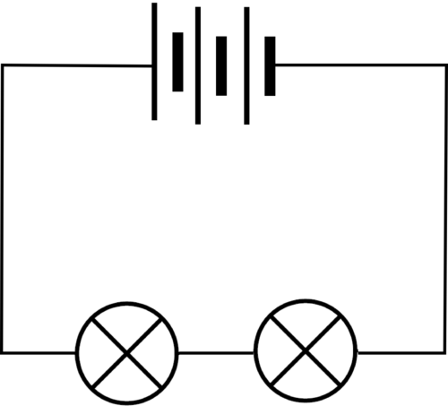
VII. 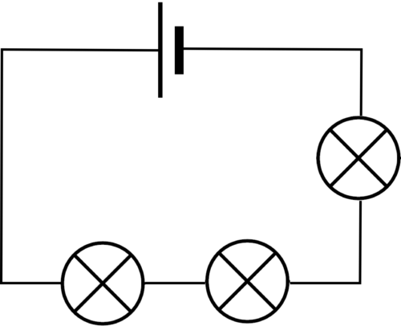
VIII. 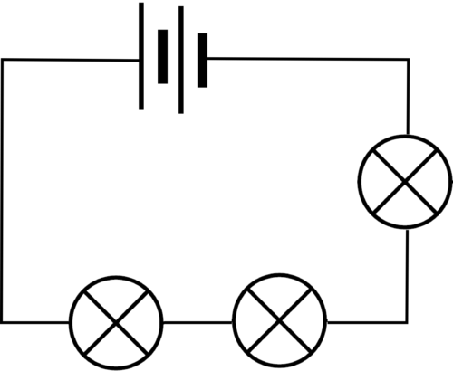
IX.
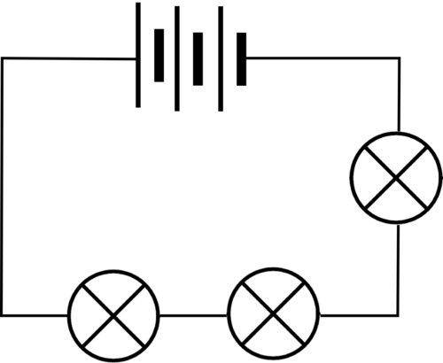
Voorspel vir elke stroombaan watter gloeilampie die helderste sal skyn. Waarop het jy jou voorspelling gebaseer?
Leerder-afhanklike antwoord.
Voorspel in elke stroombaan watter gloeilampie die dofste sal skyn. Waarop het jy jou voorspelling gebaseer?
Leerder-afhanklike antwoord.
Waarom sal die helderheid van gloeilampies I, V en IX dieselfde wees?
Leerder-afhanklike antwoord.
Toets nou elk van die voorspellings deur die stroombane te bou. Sluit 'n ammeter in elke stroombaan in, sodat die elektriese stroom gemeet kan word.
Leerder-afhanklike antwoord.
Die helderste gloeilamp behoort stroombaan III te wees, omdat dit die grootste stroom en die kleinste weerstand het. Die dofste gloeilamp behoort stoombaan VII te wees, aangesien dit die kleinste stroom en die grootste weerstand het. Die gloeilampies in stroombane I, V en IX behoort dieselfde helderheid te hê, indien hulle dieselfde weerstand het. Leerders kan hulle voorspellings toets deur die PhET simulasies te gebruik. Die volgende webblad kan gebruik word: bit.ly/17vBMBX
Ons het nou gesien dat die elektriese stroom beïnvloed word deur meer selle en resistors in serie te koppel. Ons het die elektriese stroom op slegs een punt in die stroombaan gemeet. Kom ons kyk nou hoe die elektriese stroom op verskillende punte in die stroombaan vergelyk.
Elektriese stroom in 'n seriestroombaan
Hierdie is 'n hersieningsaktiwiteit aangesien leerders dit in Gr. 8 gedoen het.
drie 1,5 V selle
geïsoleerde kopergeleidingsdrade
twee 1,5 V selle
twee flitsgloeilampies
ammeter
INSTRUKSIES:
Stel 'n stroombaan met twee selle en twee gloeilampies in serie op.
Koppel 'n ammeter in serie tussen die positiewe terminaal van die battery en die eerste gloeilamp.
Meet die stroomsterkte met die ammeter. Teken 'n stroombaandiagram vir die opstelling.
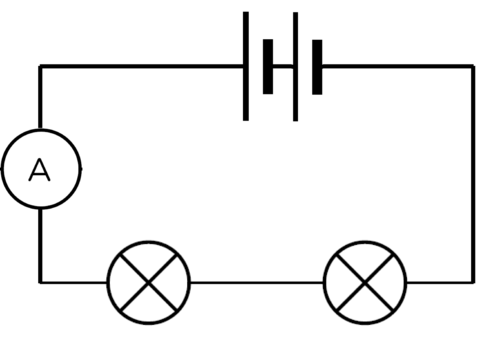Stroombaan 1
Verwyder die ammeter en sluit weer die stroombaan.
Plaas nou die ammeter in serie tussen die twee gloeilampies.
Meet die stroomsterkte met die ammeter. Teken 'n stroombaandiagram vir die opstelling.
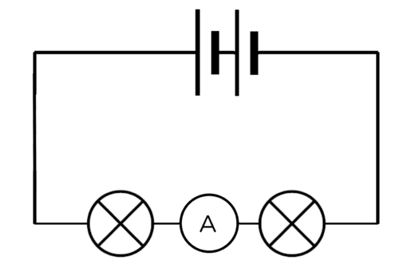Stroombaan 2
Verwyder die ammeter en sluit weer die stroombaan.
Plaas die ammeter in serie tussen die laaste gloeilampie en die negatiewe terminaal van die battery.
Meet die stroomsterkte met die ammeter. Teken 'n stroomdiagram van die opstelling.
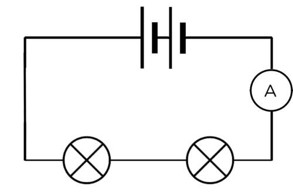Stroombaan 3
Voltooi die volgende tabel:
Posisie van die ammeter in die stroombaan.
Ammeterlesing (A)
Tussen die positiewe terminaal van die battery en die eerste gloeilampie.
Tussen die gloeilampies
Tussen die negatiewe terminaal van die battery en die laaste gloeilampie.
Die ammeterlesing behoort dieselfde te wees op enige punt in die seriestroombaan.
Wat kan jy hieruit aflei oor die elektriese stroom in 'n seriestroombaan?
Die stroomsterkte is dieselfde op enige punt in 'n seriestroombaan.
'n Parallelle stroombaan verskaf meer as een roete vir die elektriese stroom om deur die stroombaan te beweeg.
Parallelle stroombaan
Teken 'n stroombaandiagram vir hierdie stroombaan
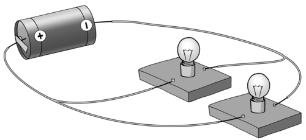
Die stroombaandiagram behoort as volg te lyk:
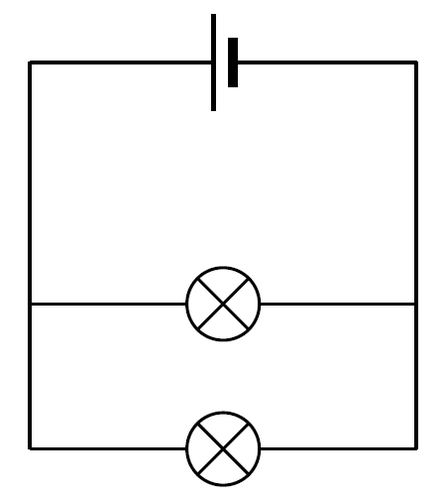
Selle in parallel
Ons het gesien dat die energie wat aan elektrone verskaf kan word, verhoog word wanneer selle in serie gekoppel word. Die potensiaalverskil verhoog. Kom ons ondersoek wat gebeur wanneer selle in parallel gekoppel word.
Wat gebeur met die elektriese stroom en die potensiaalverskil wanneer selle in parallel in 'n stroombaan gekoppel word.
Indien daar nie genoeg apparaat beskikbaar is vir hierdie aktiwiteit nie, laat die leerders toe om beurte te maak. Die PhET simulasie kan vanaf die volgende skakel verkry word: bit.ly/17vBMBX
HIPOTESE:
Skryf 'n hipotese vir die ondersoek.
'n Moontlike antwoord: Wanneer die getal selle in 'n stroombaan vermeerder word, sal die elektriese stroom en potensiaalverskil vermeerder.
Onthou dat die hipotese nie altyd korrek hoef te wees nie, dit hoef slegs die verband tussen die veranderlikes te noem, en watter waarnemings verwag word.
MATERIALE EN APPARAAT:
drie 1,5 V selle
geïsoleerde kopergeleidingsdrade met krokodilklampe
ammeter
voltmeter
resistor
METODE:
Bou 'n stroombaan met een sel en 'n ammeter in serie.
Koppel 'n voltmeter in parallel met die sel soos in die stroombaandiagram gewys word.
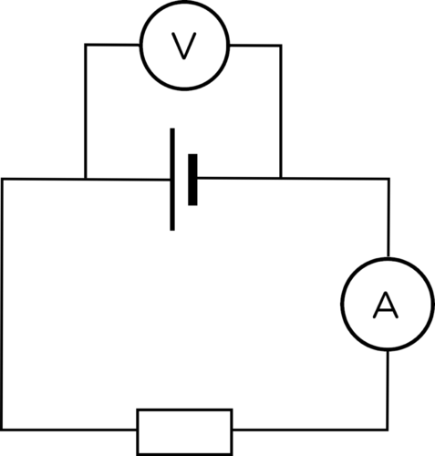
Teken die lesings in die onderstaande tabel aan.
Koppel 'n tweede sel in parallel met die eerste een soos in die diagram.
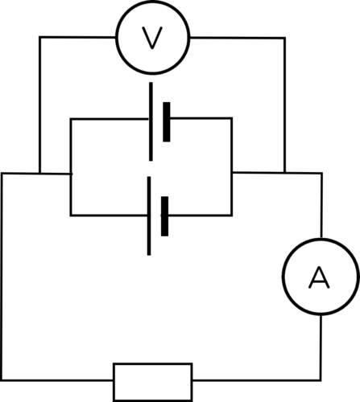
Teken die nuwe lesings in die onderstaande tabel aan.
Koppel 'n derde sel parallel tot die eerste twee. Teken 'n stroombaandiagram vir jou opstelling in die spasie hieronder.
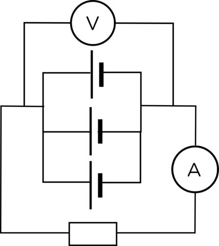
Teken die nuwe lesings in die onderstaande tabel aan.
RESULTATE:
Voltooi die volgende tabel:
Getal selle in parallel
Ammeterlesing (A)
Voltmeterlesing (V)
1
2
3
GEVOLGTREKKING:
Wat kan ons uit die ondersoek aflei oor wat gebeur wanneer selle in parallel in 'n stroombaan gekoppel word?
Wanneer meer selle in parallel in 'n stroombaan gekoppel word, beïnvloed dit nie die stroomsterkte en die potensiaalverskil nie.
Wat het ons geleer? Wanneer ons meer selle in parallel koppel, bly die totale potensiaalverskil dieselfde as wanneer slegs een sel gekoppel word. Indien beide selle dus 1,5 V is, sal die potensiaalverskil van die battery ook slegs 1,5 V wees. Die elektriese stroom is dieselfde as wanneer daar slegs een sel in die stroombaan is.
Watter voordeel het dit om selle op hierdie wyse in 'n stroombaan te koppel? Bespreek dit met die klas.
Wanneer ons selle in parallel koppel, word daar 'n alternatiewe roete vir die elektrone gebied. Dit beteken dat elkeen van die selle langer hou as wanneer hulle in serie gekoppel word. Indien een sel buite werking is, kan die stroombaan nog steeds van die ander sel gebruik maak.
Resistors in parallel
Parallelle stroombane het meer as een roete vir die elektriese stroom om in te vloei. Kom ons kyk na hoe meer resistors in parallel die stroomsterkte beïnvloed.
Die koppeling van resistors in parallel
Hierdie aktiwiteit is hersiening van 'n ondersoek wat in Gr. 8 gedoen is. Die leerders mag dalk al vergeet het wat in 'n parallelle stroombaan gebeur, en dit is dus die moeite werd om die aktiwiteit te herhaal.
drie 1,5 V selle
1,5 V sel
3 flitsgloeilampies
geïsoleerde kopergeleidingsdrade
skakelaar
ammeter
Die skakelaar en die ammeter is nie noodsaaklik nie, en kan uitgelaat word, indien daar nie genoeg skakelaars of ammeters beskikbaar is nie.
INSTRUKSIES:
Bou 'n stroombaan met die sel, ammeter, een gloeilampie en die skakelaar in serie.
Sluit die skakelaar.
Let op hoe helder die gloeilampie skyn, en skryf die ammeterlesing neer. Teken die stroombaandiagram vir jou stroombaan.
Maak die skakelaar oop.
Koppel nog 'n gloeilampie, in parallel met die die eerste een.
Sluit die skakelaar.
Let nou op hoe helder die gloeilampie skyn, en skryf die ammeterlesing neer. Teken die stroombaandiagram.
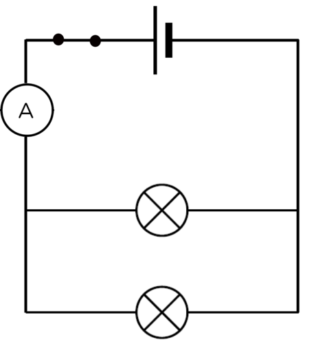
Maak die skakelaar oop.
Voeg 'n derde gloeilampie in die stroombaan, in parallel met die eerste twee.
Sluit die skakelaar.
Let nou op hoe helder die gloeilampie skyn, en skryf die ammeterlesing neer. Teken die stroombaandiagram.
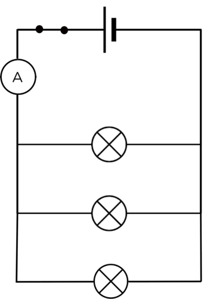
VRAE:
Wat gebeur met die helderheid van die gloeilampies en die ammeterlesing soos wat meer gloeilampies in parallel gevoeg word?
Die helderheid neem af, en so ook die lesing op die ammeter.
Verduidelik jou waarnemings in Vraag 1.
Soos meer resistors in parallel gekoppel word, neem die totale weerstand van die stroombaan af, omdat die elektriese stroom van alternatiewe roetes voorsien word. Die elektriese stroom verhoog soos wat elke resistor in parallel gekoppel word.
In die vorige aktiwiteit het ons slegs elektriese stroom in die hooftak van die stroombaan gemeet. Wat gebeur met die elektriese stroom in die parallelle vertakkings?
Elektriese stroom in 'n parallelle stroombaan
Hierdie is ook 'n hersieningsaktiwiteit van wat leerders in Gr. 8 gedoen het.
drie 1,5 V selle
geïsoleerde kopergeleidingsdrade
twee 1,5 V selle
drie identiese flitsgloeilampies
ammeter
METODE:
Stel 'n stroombaan op met twee selle in serie, en drie gloeilampies in parallel.
Plaas 'n ammeter in serie in die stroombaan, tussen die selle en die eerste vertakking soos in die onderstaande diagram aangedui word.
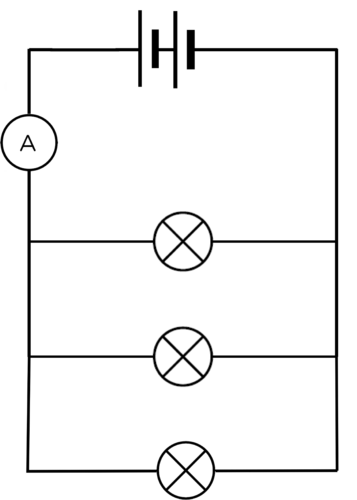
Gebruik die ammeter om die elektriese stroomsterkte te meet.
Verwyder die ammeter en sluit die stroombaan. Plaas die ammeter nou, in serie, in die eerste vertakking.
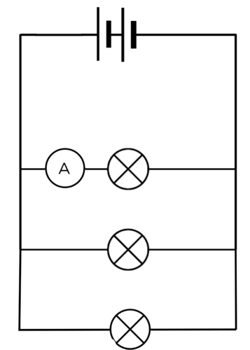
Gebruik die ammeter om die elektriese stroomsterkte te meet.
Plaas die ammeter, in serie, in die tweede vertakking.
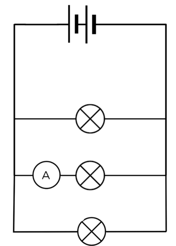
Gebruik die ammeter om die elektriese stroomsterkte te meet.
Plaas die ammeter, in serie, in die derde vertakking.
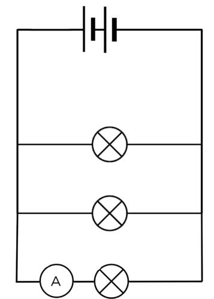
Gebruik die ammeter om die elektriese stroomsterkte te meet.
Plaas die ammeter, in serie, tussen die eerste vertakking en die batterye aan die ander kant van die stroombaan.
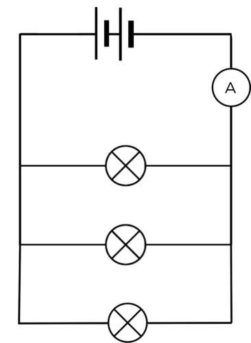
Gebruik die ammeter om die elektriese stroomsterkte te meet.
Teken 'n tabel in die spasie hieronder en skryf jou lesings in die tabel neer.
'n Voorbeeld van 'n tabel is:
Tabel van ammeterlesings op verskillende plekke in 'n parallelle stroombaan
Posisie van die ammeter in die stroombaan.
Ammeterlesing (A)
tussen die selle en die eerste vertakking
in die eerste vertakking
in die tweede vertakking
in die derde vertakking
tussen die eerste vertakking en die selle
VRAE:
Wat let jy op van die elektriese stroom in die hooftak in vergelyking met die elektriese stroom in die vertakkings?
Die elektriese stroom in die hooftak is groter as die elektriese stroom in elke vertakking.
Tel die elektriese stroom in elke vertakking bymekaar. Wat let jy op?
Leerders behoort op te let dat die elektriese stroom in elke vertakking optel tot die totaal van die elektriese stroom in die hoofstroom.
Gebruik die onderstaande stroombaandiagram en skryf vergelykings vir die verband tussen die ammeterlesings:
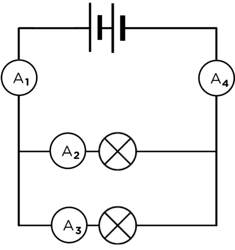
A1 en A4.
A1, A2 en A3.
A4, A2 en A3.
A1 = A4
A1 = A2 + A3
A4 = A2 + A3
Watervloei-analogie: serie en parallelle stroombane (video). bit.ly/19nWOCB
Wanneer resistors in parallel gekoppel word, verlaag die totale weerstand van die stroombaan terwyl die totale elektriese stroom toeneem. Waarom gebeur dit? Deur resistors in parallel te koppel, word 'n alternatiewe roete vir die elektriese stroom gebied. Dit is dus makliker vir die elektriese stroom om deur so 'n stroombaan te vloei, as een waar al die stroom deur slegs een weerstand moet vloei.
Verbeel jou jy sit in die skoolsaal tydens 'n saalbyeenkoms. Jy is verveeld en kan nie wag dat die byeenkoms moet eindig, sodat jy met jou vriende kan gaan gesels nie. Daar is slegs een uitgang uit die saal. Aan die einde van die saalbyeenkoms moet almal deur die een deur buitentoe gaan. Dit neem baie lank omdat net 'n paar leerders op 'n slag deur die deur kan gaan.
Nou verbeel jou dat daar 'n tweede deur is, net soos die eerste een. Die leerders kan nou baie vinniger uit die saal gaan. Sommige leerders sal deur die eerste deur uitgaan, terwyl ander deur die tweede deur sal uitgaan. Niemand kan terselfdertyd deur beide deure gaan nie.
Dit is soortgelyk aan hoe elektrone in 'n stroombaan optree. Sommige elektrone sal deur een vertakking vloei, en ander elektrone sal deur die ander vertakking vloei. Die elektriese stroom word tussen die twee roetes verdeel. Ons sê parallelle resistors is stroomverdelers. Alhoewel beide roetes weerstand bied, is die totale weerstand minder as wanneer daar slegs een roete is.
Ons gaan nou na die potensiaalverskil oor elke resistor in 'n parallelle stroombaan kyk.
Die potensiaalverskil oor komponente in 'n parallelle stroombaan
Indien daar nie genoeg apparaat beskikbaar is vir hierdie aktiwiteit nie, laat die leerders toe om beurte te maak. Die PhET simulasie kan vanaf die volgende skakel verkry word: bit.ly/17vBMBX
Hierdie ondersoek vereis 'n groot hoeveelheid apparaat, en dit sal dus sin maak om PhET simulasies te gebruik. Indien die PhET simulasies nie beskikbaar is nie, kan die ondersoek as demonstrasie uitgevoer word.
ONDERSOEKENDE VRAAG:
Wat is die verband tussen die potensiaalverskil oor die battery, en die potensiaalverskil oor elke resistor in 'n parallelle stroombaan?
HIPOTESE:
Formuleer 'n hipotese vir hierdie ondersoek.
Leerder-afhanklike antwoord. Die leerders moet die verband wat hulle tussen potensiaalverskil oor die individuele resistors en die potensiaalverskil oor die battery verwag, noem. 'n Voorbeeld is: Die potensiaalverskil oor die individuele resistors is gelyk aan die potensiaalverskil oor die battery.
MATERIALE EN APPARAAT
drie 1,5 V selle
geïsoleerde kopergeleidingsdrade met krokodilklampe
twee flitsgloeilampies of resistors
drie voltmeters
'n skakelaar
3 ammeters
Gebruik gloeilampies of resistors van verskillende weerstande om te demonstreer dat die potensiaalverskil oor elkeen dieselfde is as wanneer hulle in parallel gekoppel is.
METODE
Bou die volgende stroombaan:
Indien die leerders hierdie ondersoek in groepe doen, maak seker dat hul stroombane korrek gebou is, en dat die voltmeters in parallel gekoppel is.
Let op wat die lesings op die 3 voltmeters en ammeters is.
RESULTATE:
Teken die lesing in die onderstaande tabel aan en skryf dit in op die bostaande stroombaandiagram:
Voltmeterlesing
(V)
Ammeterlesing
(A)
V1
A1
V2
A2
V3
A3
Hierdie lesings sal van die eksperimentele opstelling in die skoollaboratorium, of die PhET simulasie, afhang. Die leerders behoort te sien dat lesings op V2, V3 en V1 dieselfde is, en dat A2 en A3 optel tot A1.
Wat let jy op van die lesings op voltmeters V2 en V3 in vergelyking met V1?
Die leerders se antwoorde mag verskil, maar hulle behoort op te let dat die lesings op V1 ,V2 en V3 dieselfde is.
Tel die lesings op A2 en A3 op. Wat let jy op?
Die antwoord sal afhang van die akkuraatheid van die ammeters. Leerders behoort ook te sien dat die som van A2 en A3 gelyk is aan die lesing op A1.
Verduidelik die roete van die elektrone deur die stroombaan deur na die ammeterlesings te verwys.
Die elektrone het meer as een roete om te volg. Sommige elektrone beweeg deur die eerste roete, en die ander deur die tweede roete. Al die elektrone beweeg deur A1.
GEVOLGTREKKING:
Skryf 'n gevolgtrekking vir die ondersoek neer, deur na jou ondersoekende vraag te verwys.
Die potensiaalverskil oor die battery is dieselfde as die potensiaalverskil oor elk van die parallelle resistors.
Uitbreiding:
Hierdie is 'n uitbreidingsaktiwiteit om berekeninge, wat nie op hierdie vlak vereis word nie, te doen. Die behels baie eenvoudige vergelykings en beklemtoon dat leerders die weerstand in 'n stroombaan kan bereken. Dit is ook belangrik dat leerders besef dat hulle in Gr. 10-12 baie berekeninge in Fisiese Wetenskappe gaan doen.
Die video oor 'Voltage, current and resistance' in die besoekboksie hieronder, verskaf 'n goeie verduideliking van die verwantskap tussen die konsepte potensiaalverskil, elektriese stroom en weerstand. Die video maak ook van PhET simulasies gebruik om stroombane te bou, en is by die volgende skakel beskikbaar: bit.ly/1gqqTIa. Die video verskaf 'n goeie voorbeeld van hoe simulasies in die klaskamer geïntegreer kan word, om die konsepte te onderrig.
Potensiaalverskil, elektriese stroom en weerstand. bit.ly/1b7ggTC
Weet jy dat ons die weerstand van elke gloeilamp in die stroombaan in hierdie ondersoek, kan bereken? Ons het gesien dat die elektriese stroom (I) deur 'n resistor omgekeerd eweredig is aan die weerstand (R) en dat die potensiaalverskil (V) oor die resistor direk eweredig is aan die weerstand.
Die verwantskap word in die volgende vergelyking opgesom: R = V/I
Die eenheid vir weerstand is die ohm (Ω), wat as volt per ampere gedefinieer word. Dit kan as volg geskryf word:
1 ohm = 1 volt/ampere
Ons kan dus die weerstand bereken. 'n Voorbeeld hiervan word hieronder ingesluit. Die waardes in die stroombaandiagram word gebruik.
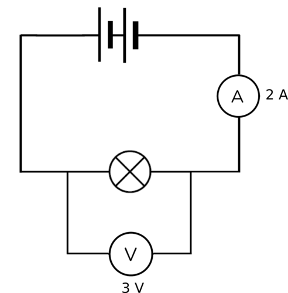
R = V/I
= 3V/2A
= 1.5 Ω
In die ondersoek het jy die potensiaalverskil (in volt) en die stroomsterkte (in ampere) for elke gloeilamp gemeet. Gebruik hierdie waardes om die weerstand van jou gloeilampie te bepaal.
Weerstand van gloeilampie 1 = V2/A2
Weerstand van gloeilampie 2 = V3/A3
Die verwantskap tussen die elektriese stroom deur 'n resistor, die potensiaalverskil oor die resistor, en die weerstand van die resistor, word Ohm se Wet genoem.
Wat het ons uit hierdie ondersoek geleer?
Die elektriese stroom in parallelle stroombane verdeel wanneer daar vertakkings in die roete is. Die totale elektriese stroom is gelyk aan die som van die elektriese stroom in elk van die vertakkings.
Die potensiaalverskil oor elk van die vertakkings is dieselfde as die potensiaalverskil oor die battery.
Serie en parallelle stroombane
Hierdie aktiwiteit behoort aan leerders die voordeel van parallelle stroombane in huishoudings te wys. Wanneer 'n gloeilamp in 'n seriestroombaan verwyder word, word die enkele roete onderbreek en die stroom kan nie meer deur die stroombaan vloei nie. Wanneer 'n gloeilamp uit 'n parallelle stroombaan verwyder word, is daar nog steeds ander roetes vir die elektriese stroom beskikbaar, en die ander gloeilampe kan steeds werk.
Indien daar nie genoeg apparaat beskikbaar is vir hierdie aktiwiteit nie, laat die leerders toe om beurte te maak. Die PhET simulasie kan vanaf die volgende skakel verkry word: bit.ly/17vBMBX
drie 1,5 V selle
twee 1,5 V selle
geïsoleerde kopergeleidingsdrade
twee flitsgloeilampies
INSTRUKSIES:
Bou 'n seriestroombaan met twee selle en twee flitsgloeilampies. Skyn beide die gloeilampies?
Beide die gloeilampies skyn.
Verwyder nou een van die gloeilampies. Wat gebeur?
Nie een van die gloeilampies skyn nie.
Bou 'n parallelle stroombaan met twee selle en twee gloeilampies in parallel met mekaar. Skyn beide die gloeilampies?
Beide die gloeilampies skyn.
Verwyder een van die flitsgloeilampies. Wat let jy op?
Die gloeilampie wat in die stroombaan oorbly, skyn nog steeds.
VRAE:
Waarom het die seriestroombaan opgehou werk, toe die gloeilampie verwyder is?
Die enkele roete in die seriestroombaan is gebreek toe die gloeilampie uitgehaal is. Dit beteken dat die elektriese stroom nie meer deur die stroombaan kon vloei nie en dit het opgehou om te werk.
Waarom het die gloeilampie in die parallelle stroombaan aangehou brand toe die ander gloeilampie verwyder is?
Een van die roetes is onderbreek toe die gloeilampie uitgehaal is, maar die ander roete kon nog gebruik word vir die elektriese stroom om deur te vloei.
Watter soort stroombaan, serie of parallel, is die beste vir 'n huishoudelike stroombaan? Hoekom sê jy so?
Die parallelle stroombaan sal beter wees, omdat ligte afgeskakel word, of kan breek. Indien ons 'n parallelle stroombaan gebruik, sal die res van die ligte, en toestelle in die huis, nog steeds werk. Indien ons 'n seriestroombaan gebruik, en een van die toestelle werk nie, beteken dit dat die hele stroombaan nie werk nie.
Parallelle stroombane is nuttig om in huishoudings te gebruik, omdat daar 'n alternatiewe roete is wanneer een van die roetes nie werk nie. Indien die badkamergloeilamp byvoorbeeld breek, kan die ander gloeilampe in die huis nog steeds gebruik word. Indien 'n huishouding 'n seriestroombaan sou gebruik het, sou al die ligte en toestelle in die huis opgehou werk het wanneer een lig nie werk nie. Jy kan ook ligte in verskillende kamers op verskillende tye aanskakel, sonder om al die ligte in die hele huis op dieselfde tyd aan te skakel.
'n Voorbeeld van 'n seriestroombaan, is 'n stel Kersfeesliggies wat somtyds in bome opgesit word. Elke gloeilampie word in serie met die ander gekoppel. Dit beteken dat wanneer een liggie breek, geeneen van die liggies werk nie. Om uit te vind watter liggie stukkend is, moet elke gloeilampie getoets word.
'n Seriestroombaan verskaf slegs een roete waardeur die elektrone in die stroombaan kan beweeg.
Wanneer die getal selle in serie vermeerder word, word die stroomsterkte deur die stroombaan, en die potensiaalverskil oor die selle, verhoog.
Wanneer die getal resistors in 'n seriestroombaan vermeerder word, word die totale weerstand van die stroombaan verhoog.
Resistors in serie is potensiaalverskilverdelers. Die som van die potensiaalverskil oor die resistors is gelyk aan die potensiaalverskil oor die battery.
Die stroomsterkte in 'n seriestroombaan is dieselfde op alle punte in die stroombaan.
'n Parallelle stroombaan verskaf meer as een roete vir die elektrone om deur die stroombaan te beweeg.
Wanneer die getal selle in parallel vermeerder word, het dit geen effek op die stroomsterkte, of die potensiaalverskil, in die stroombaan nie.
Wanneer die getal resistors in parallel vermeerder word, word die totale weerstand van die stroombaan verminder.
Resistors in parallel is elektriese stroomverdelers. Die elektriese stroom het meer as een roete wat gevolg kan word, en die stroom verdeel dus tussen die vertakkings. Die som van die stroomsterkte in elk van die vertakkings is gelyk aan die totale stroom voor en na die vertakking.
Die potensiaalverskil oor elke vertakking is gelyk aan die potensiaalverskil oor die battery.
Parallelle stroombane word in die beligting van geboue gebruik.
Konsepkaart
Voltooi die konsepkaart op die volgende bladsy. Onthou dat jy jou eie notas en opsommings kan byvoeg om dit so volledig moontlik te maak sodat jy dit kan gebruik om vir 'n toets of die eksamen voor te berei.
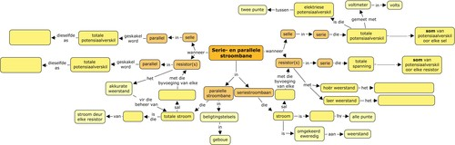
Onderwyser se weergawe
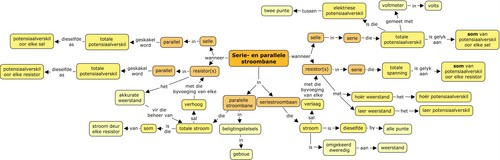
Hersieningsvrae
Teken die volgende stroombaandiagramme:
'n Geslote seriestroombaan wat uit een sel, twee gloeilampies en 'n skakelaar bestaan. [2 punte]
'n Oop seriestroombaan wat uit twee selle, twee gloeilampies en 'n skakelaar bestaan. [2 punte]
'n Geslote stroombaan wat uit een sel en 'n resistor in serie bestaan, met 'n ammeter wat die stroomsterkte van die stroombaan meet, en 'n voltmeter wat die potensiaalverskil van die sel meet. [2 punte]
'n Geslote stroombaan met twee selle in serie en twee gloeilampies in parallel. [2 punte]
'n Geslote stroombaan met 'n ammeter en 'n resistor in serie, drie selle in parallel, en 'n voltmeter wat die potensiaalverskil oor die drie selle meet. [2 punte]
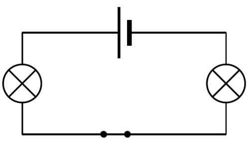
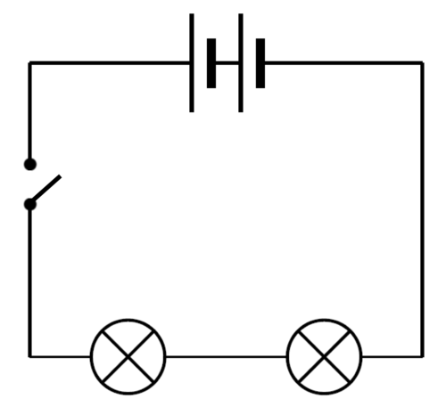
Bestudeer die onderstaande stroombaandiagram. Identifiseer die getal gloeilampies, skakelaars en selle in die stroombaan, en dui aan of dit in serie, of in parallel gekoppel is. [3 punte]
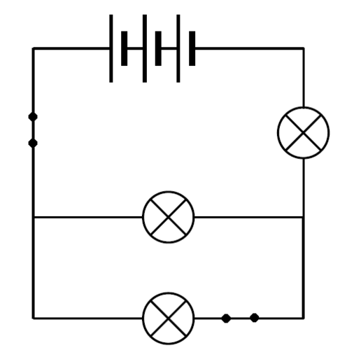
Daar is drie selle wat in serie gekoppel is. Daar is een gloeilampie in serie, en twee gloeilampies in parallel gekoppel. Daar is een skakelaar in serie in die hoofstroom, en een skakelaar in serie met een van die gloeilampies in die parallelle vertakking.
Susan het 'n string Kersfeesliggies gekoop om in haar kersboom op te hang. Een van die liggies breek toe sy dit inprop en aanskakel.
Wat gebeur met die ander liggies? [1 punt]
Verduidelik jou antwoord op die bostaande vraag. [2 punte]
Die res van die liggies werk nie.
Die liggies word in serie met mekaar verbind. Wanneer een liggie stukkend is, is die stroombaan gebreek en sal geen elektriese stroom deur die stroombaan vloei nie.
Huishoudelike stroombane is parallelle stroombane. Verduidelik waarom dit beter is om eerder parallelle as seriestroombane in 'n huis te gebruik. [2 punte]
Dit maak dit moontlik om een kamerlig aan te skakel, sonder om al die ligte in die huis aan te skakel. Indien een deel van die parallelle stroombaan gebreek word, sal die res van die stroombaan steeds funksioneer, omdat die ander roetes geslote is.
Beantwoord die volgende vrae oor die onderstaande stroombaan.
Stroombaan
Waardes vir elke lesing [2 punte]
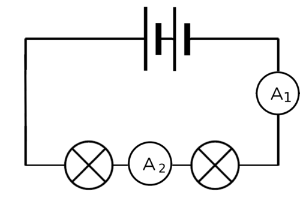
A1 = 3 A
A2 =
Bereken die ontbrekende waardes.
Verduidelik jou antwoord hierbo. [1 punt]
A2 = 3 A
NOTA: Daar is baie verskillende variasies op die diagramme in hierdie vraag. Die waardes, of die uitleg van die stroombaan, kan maklik verander word om ekstra oefening aan leerders wat met die konsepte sukkel, te bied.
Die elektriese stroom is dieselfde oral in 'n seriestroombaan.
Beantwoord die volgende vrae oor die onderstaande stroombaan.
Stroombaan
Waardes vir elke lesing [2 punte]
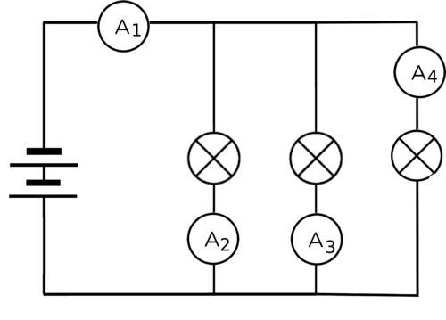
A1 =
A2 = 3 A
A3 = 3 A
A4 = 1 A
Bereken die ontbrekende waardes.
Verduidelik jou antwoord hierbo. [2 punte]
A1 = 7 A
Die elektriese stroom in 'n seriestroombaan verdeel in elk van die parallelle vertakkings sodat die totale elektriese stroom in die hoofstroom gelyk is aan die som van die elektriese stroom in elk van die vertakkings.
Beantwoord die volgende vrae oor die onderstaande stroombaan.
Stroombaan
Waardes vir elke lesing [2 punte]
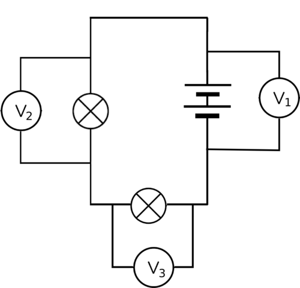
V1 = 12 V
V2 = 8 V
V3 =
Bereken die ontbrekende waardes.
Verduidelik jou antwoord hierbo. [2 punte]
V3 = 4 A
Die potensiaalverskil oor die battery in 'n seriestroombaan is gelyk aan die som van die potensiaalverskil oor elk van die resistors.
Beantwoord die volgende vrae oor die onderstaande stroombaan.
Stroombaan
Waardes vir elke lesing [2 punte]
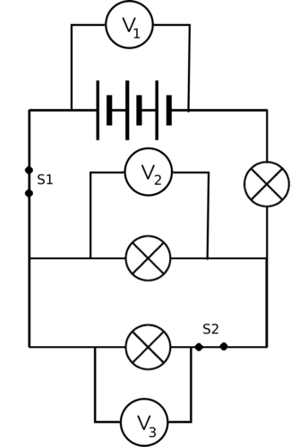
V1 = 10 V
V2 =
V3 =
Bereken die ontbrekende waardes.
Verduidelik jou antwoord hierbo. [1 punt]
Hoeveel van die gloeilampies sal brand indien skakelaar S1 oopgemaak word? [1 punt]
Hoeveel van die gloeilampies sal brand indien skakelaar S2 oopgemaak word? [1 punt]
V2 en V3 = 10 V.
Die potensiaalverskil oor die battery in 'n parallelle stroombaan is gelyk aan die potensiaalverskil oor elk van die resistors in parallel.
Geen van die gloeilampies sal brand nie.
Twee gloeilampies sal brand.
Bereken die ontbrekende waardes.
Stroombaan
Waardes vir elke lesing [2 punte]
Elke sel in hierdie stroombaan is 1,5 V. Wat is die lesing op V?
Die lesing is 1,5 V.
Beantwoord die volgende vrae oor die onderstaande stroombaan.
Stroombaan
Waardes vir elke lesing [4 punte]
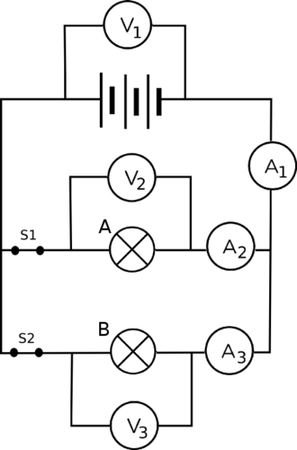
V1 = 9 V
V2 =
V3 =
A1 = 6 A
A2 = 2 A
A3 =
Bereken die ontbrekende waardes.
Wat sal die lesing op A2 wees indien skakelaar S2 oopgemaak word? [2 punte]
Verduidelik jou antwoord op die vorige vraag. [2 punte]
Watter gloeilampie, A of B, het die hoogste weerstand? [2 punte]
Verduidelik jou antwoord op die vorige vraag. [2 punte]
Uitbreidingsvraag: Bereken die weerstand van gloeilampie A en gloeilampie B. Wys jou bewerkings in die spasie hieronder. [4 punte]
V2 en V3 = 9 V.
A3 = 4 A.
Dit sal 6 A wees.
Die stroombaan word 'n seriestroombaan wanneer skakelaar S2 oopgemaak word. Al die elektriese stroom gaan deur die een vertakking, A2. A1 en A2 sal dus dieselfde lesing, naamlik 6 A, hê.
Gloeilamp A het 'n hoër weerstand.
Gloeilamp A ondervind 'n kleiner elektriese stroom en moet dus 'n hoër weerstand bied. Weerstand en elektriese stroom is omgekeerd eweredig (hoe hoër die weerstand is, hoe laer is die elektriese stroom).
Hierdie is 'n uitbreidingsvraag, en dit word nie van leerders verwag om weerstand te kan bereken nie. 'n Voorbeeld is in die hoofstuk behandel.